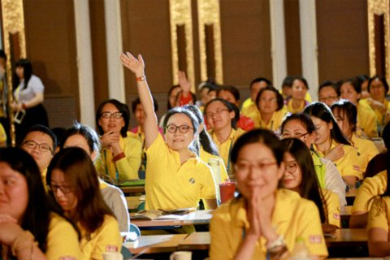

第六届世界青年佛学研讨会问答
（一）问：十二缘起法则，有着非同寻常的世出世间的意义。无明缘行、行缘识……一直到生、老死，然后是下一轮的无明。无明到底从什么时候开始？常听佛教中说“无始以来”，但怎么会无始呢？总该有一个开始吧？
堪布：按照显宗的观点，每一个众生有无始以来的无明。所谓的“无始”，是因为时间非常久远，所以无法指定一个开始的时候。不仅仅是“无明”，在这个世界上，还有很多找不到开头的事物。实际上，心识更是如此，每一个众生的迷惑本身就是开始。
按照密宗的有些观点讲，就像虚空当中的云突然出现一样，在显现外境的时候，对事物的本质或实相不能如实了知，就起现了无明。但是，正如天空的本性中不可能有云存在，心的本性上，无明也是不存在的。

（二）问：我经常和青少年在一起，做戏剧教育和治疗。这个过程中，有可能和孩子们一起哭一起笑，经历许多激烈甚至黑暗的情感。这样的工作性质，是否离戒定慧非常远？如何能把世间的工作和佛法的修行结合起来？
堪布：跟孩子们一起笑一起哭，这一切的行住坐卧，其实跟佛学的修行可以连在一起，不需要脱离。
你可以一边念咒语，一边观众生的痛苦，一边帮助别人。通过智慧让别人的无明渐渐消除，这本身就是佛教的教育。
很多年轻人不一定要到深山老林去修行，也不一定要披着袈裟剃着光头到寺院里去。佛教的戒定慧，在每时每刻，在任何喧嚣的都市中，都可以行持，都可以修行。
（三）问：亚里士多德把物理学和形而上学结合得很紧密。但是，现在的一些物理教学中，只教物理，不讨论哲学或者形而上学。不知道潘教授如何看待这种教学理念？
潘教授：这是个非常复杂的问题。先举个例子，医科。早期医科是整个人体的医科，没有分科，但是后来发展得越来越精密，对每个器官都有很长时间的研究，才明白肺、肾等各个部位的功能和情况，慢慢就有了分工，有了专门处理肝脏、肾脏等问题的分科。这说明什么呢？随着科技的发展、时间的发展、社会的发展，情况越来越复杂，很难用一个整体的理论说明一切事情，所以要分工，专门管理。
我不是说物理不应该跟哲学一起研究，但我明白，现在物理学的发展很快，很复杂。所以要看教物理学的老师怎么看。假如他将物理学作为一个学问来教，没有问题。但在教课的过程中也要让同学们明白，科学只是人生的一个重要部分，而不是全部。希望在课程当中灌输一些中国传统的智慧、文化，将物理学的发展方向跟中国传统文化融合，给学生一个更全面的了解。当然，主要时间还是花在物理的专科方面比较好。